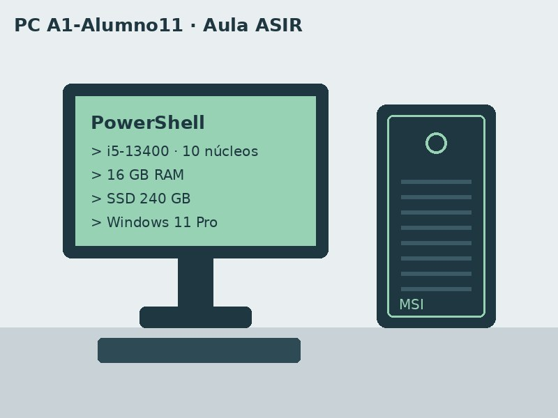

Resumen del equipo

Equipo de sobremesa del puesto 11 del aula, usado para las prácticas de redes, sistemas y programación.
Hardware
- Fabricante de la placa base
- Micro-Star International (MSI)
- Modelo
- MS-7D48
- Procesador
- Intel Core i5-13400 (13.ª generación, 10 núcleos)
- Memoria RAM
- 16 GB
- Almacenamiento
- SSD Crucial CT240BX500SSD1 de 240 GB (224 GB útiles)
- Gráfica
- Intel UHD Graphics 730 (integrada)
Más información en la web del fabricante (MSI).
Software
- Sistema operativo: Microsoft Windows 11 Pro (versión 10.0.26200)
- Editor de código: Visual Studio Code
- Control de versiones: Git
- Simulador de redes: Cisco Packet Tracer
Mantenimiento
Cómo obtener estos datos
- Abrir PowerShell en el equipo.
- Ejecutar
Get-CimInstance Win32_ComputerSystempara el fabricante, el modelo y la RAM. - Ejecutar
Get-CimInstance Win32_Processorpara el procesador. - Ejecutar
Get-PhysicalDiskpara el disco. - Anotar los resultados en esta ficha y actualizar la fecha.
Última revisión: .